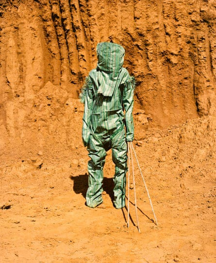
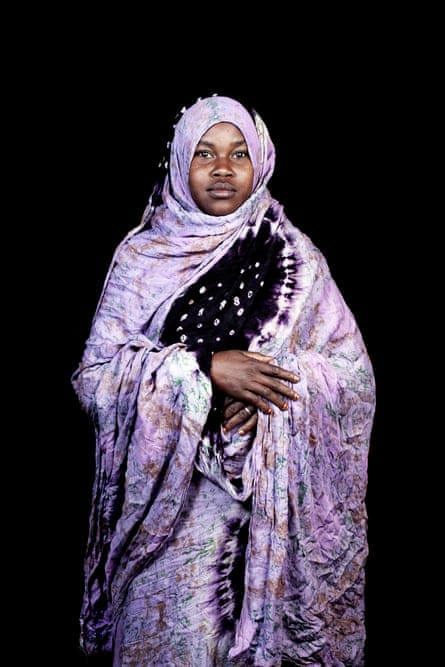

The exhibition Africa Is No Island has been curated by the online platform Afrique in visu to encourage a dialogue about the contemporary African experience that transcends borders. The exhibition takes the spirit of Afrique in visu – which is dedicated to connecting and nurturing artists with different viewpoints and practices – to present a kaleidoscope of images that makes the visitor reconsider geography, representation and history. A need to record disappearing cultures and question historical constructs runs through the exhibition. It also uses storytelling and performance to question identity and written history.
Statuette Nganga SaleLaye and Statuette Kafigeledio Prince – Guinea, 2011, Ya Kala Ben series, by Namsa Leuba. Marrakech has an uneven history with contemporary art. A few years ago there was great excitement over plans for a photography museum which would hold one of the biggest collections of visual art in the world. The building was to be designed by David Chipperfield and feature an ambitious programme of exhibitions, but the project was never realised. The seventh edition of the Marrakech Biennial was also due to take place this year but has been postponed indefinitely due to a lack of funds. No surprise then that there is a buzz around Africa is No Island in the local art galleries and at the 1-54 Contemporary African Art Fair, which launched its first African edition in Marrakech last month.
Khamlia, southern Morocco #1, 2014, the Moroccans series, by Leila Alaoui Leila Alaoui’s series The Moroccans includes a striking portrait of a woman in Khamlia, a desert village in the south of the country. Alaoui travelled with a mobile studio, photographing people in village squares in front of the same black backdrop. It is a beautiful series that celebrates local culture and forms a visual archive of faces and traditional dress. It is also all the more remarkable given that many Moroccans are superstitious about having their photograph taken.
Portrait of David Godonou-Dossou, a rich merchant and founder of the Godonou-Dossou dynasty, Porto Novo, Benin, 2011, and Idelphonse Adogbagbe, a priestess of Mami Tchamba (a form of Voodoo), Grand-Popo, Benin, 2011, by Nicola Lo Calzo